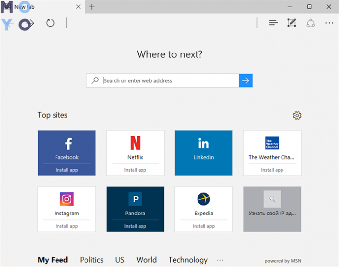

WHICH BROWSER TO CHOOSE - 5 BEST PROGRAMS
If you are looking for which browser to choose for Windows 10 or MacOS, then you need to decide on the selection criteria. Speed, functionality, security, multi-platform - these are the characteristics that users focus on when comparing programs. Chrome, Mozilla, Opera, Safari and Microsoft Edge have the most obvious prospects
Google Chrome
Chrome очолює всі основні рейтинги завдяки підтримці компанії Google. Топ пошуковик дав хороший старт цій програмі. ДО початку 2021 роки для більшої частини користувачів відповідь на питання, який браузер для себе краще вибрати однозначний: власники ПК і гаджетів віддають перевагу Chrome. Він встановлюється за умовчанням в мобільних пристроях на Андроїд. Крім того, Хром підтримується Windows, Mac, Linux, iOS. Конкуренти Мозилла і Опера теж підтримують всі ці ОС.
- Переваги
- Величезна кількість безкоштовних розширень.
- Контроль за збоями дозволяє не перезапускати Chrome при підвисань однієї з вкладок.
- Програма попереджає користувачів про відкриття небезпечних сайтів.
- Швидкі оновлення.
- Синхронізація з гугл-аккаунтом.
- будований диспетчер задач дає можливість визначити вкладку, що споживає багато ресурсів.
Chrome найшвидший в нашій топ-п'ятірці в разі роботи на комп'ютері Windows 7-10.
Mozilla Firefox
Мозилла – останній широко використовуваний браузер, незалежний від комерційних організацій. Він безпечніше аналогічних програм в плані можливого шпигунства. Використовується за замовчуванням в ОС Ubuntu. На основі Mozilla створений цибулинних браузер Tor.
- Переваги
- Крім великої кількості плагінів і розширень є можливість змінювати налаштування з командного рядка, наприклад, відключати небезпечну технологію веб РТС.
- Зручна панель закладок.
- Безпека особистих даних під контролем, включаючи зберігаються паролі.
- настроюється панель пошуку.
- Підтримка тем оформлення, RSS.
Зондуючи інтернет на предмет, який браузер варто вибрати, користувачі все ж частіше вибирають Chrome. Так відбувається, оскільки він швидше і розрекламовані Мозилли. Але якщо на першому плані питання безпеки, варто придивитися до Mozilla Firefox.
Opera
Популярність Опери в Україні багато в чому обумовлена наявністю вбудованого безкоштовного VPN. Користувачі мають можливість заходити, наприклад, в «Однокласники», минаючи табу провайдерів. Якщо людина не знає, який на хромиум вибрати браузер з можливістю зміни IP, йому можна сміливо рекомендувати Оперу.
- Переваги
- настроюється панель візуальних закладок. Клікнувши по плитці, легко перейти на улюблений сайт.
- Зручний менеджер завантажень.
- Інтуїтивно зрозумілий інтерфейс.
- настроюється панель пошуку.
- Економне витрачання пам'яті при відкритті декількох вкладок.
- Можна працювати на ноутбуці режимі, при якому батарея повільніше розряджається.
Ще одна фішка – режим «Турбо». Іноді з його допомогою вдається прискорити браузер при поганому інтернеті, але такий рецепт не завжди допомагає, може наступити і зворотний ефект.
Microsoft Edge
Кожен знає, що таке браузер, але який вибрати, щоб після скачування не було проблем з комп'ютером – питання не пусте для недосвідчених користувачів. Можна піти по шляху найменшого опору – обмежитися переглядачем, який йде разом з новою Windows – Microsoft Edge. Творці найпопулярнішою ОС перевели послідовника Internet Explorer на движок Chromium, забезпечили його сумісність з молодшими версіями системи. Можна завантажити браузер і встановити його, наприклад, на Windows 7.
- Переваги
- Лаконічний інтерфейс. Користувач не відволікається від поточних завдань.
- Швидко запускається.
- Поле адреси та рядок пошуку з'єднані воєдино.
- При серфінгу в Microsoft Edge довше тримається ноутбук.
За можливостями і функціоналом ME поступається трьом попереднім браузерам, до того ж він найвигідніший з точки зору економії заряду батареї. Ще одне ключове відмінність – неможливість видалення: занадто багато в системі на ньому зав'язано.
Safari
Цей браузер свого часу замінив Internet Explorer для Mac. Зараз використовується прихильниками MacOS і iOS. Під Windows розробники теж у свій час намагалися підлаштовуватися, але цей почин в результаті зійшло нанівець. В результаті було вирішено обмежитися операційними системами Apple.
- Браузер, що працює під MacOS, сповна розкриває свої переваги:
- Заощаджує оперативну пам'ять. Далеко не всі користувачі гаджетів від Apple собі дозволити купувати ноутбуки і смартфони з топовими конфігураціями, тому вони дбайливо ставляться до витрачання оперативки.
- Аналогічна ситуація з економією заряду батареї.
- Safari дає максимум можливостей по використанню епловскіх плагінів.
НА завершення огляду – рейтинг популярності топових браузерів:
|
Програми перегляду
|
Використання за замовчуванням на комп'ютерах і смартфонах українців | Ключова перевага |
| Chrome | 66% | Швидкість |
| Opera | 12% | VPN |
| Safari | 8 % | Для Apple |
| Mozilla | 5% | Безпека |
| Edge | 1% | Економічність |
| Решта | 8% |